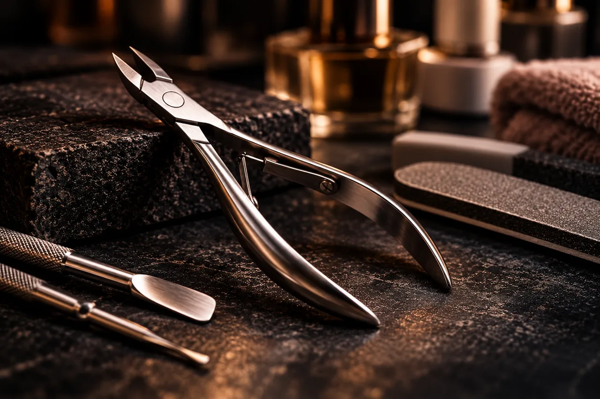
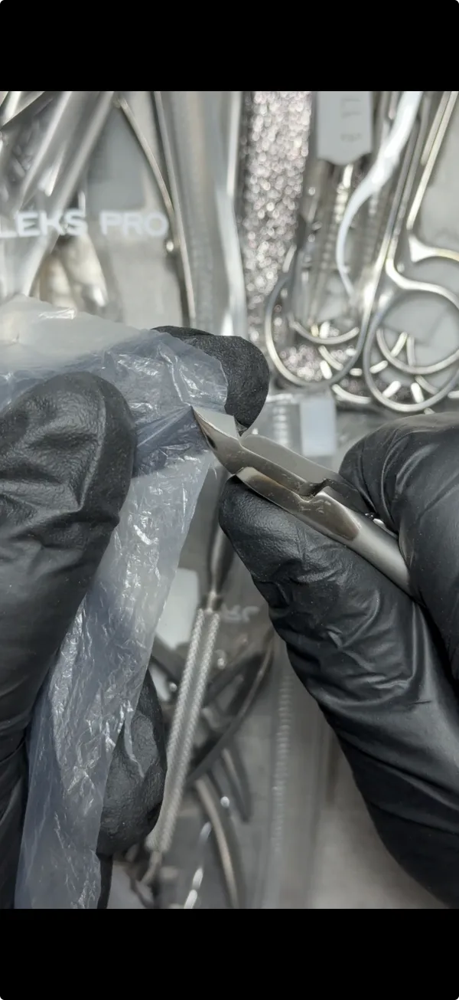

Afilado profesional
Afilado de herramientasde manicura y pedicuraen Valencia
Afilado profesional de alicates, tijeras, pinzas y empujadores para manicura y pedicura. Valoramos cada herramienta según su estado.
El plazo depende de la cantidad, el estado de las herramientas y la carga del taller.
Calle Maestro Guerrero, 4 · ValenciaAlicates 8 € · Tijeras 7 € · Pinzas y empujadores 5 €
Qué puedes traer
- Alicates para cutículas
- Alicates para uñas, incluidos los de uña encarnada
- Tijeras de manicura
- Pinzas
- Empujadores de cutícula
Estado y límites del trabajo
Si una pieza está deformada o rota, envía una foto y describe el problema para que pueda valorar si se puede recuperar.
Precio y plazo
Afilado desde 20 minutos, según cantidad, estado de las herramientas y carga del taller.
- Alicates
- 8 €
- Tijeras de manicura
- 7 €
- Pinzas / empujadores
- 5 €
El trabajo según tu herramienta
Indica qué instrumento utilizas y qué ocurre al cortar o trabajar. Si traes varias piezas, dime cuántas son para organizar la entrega.
Ver el vídeo de los alicates de manicura
Prueba de corte de alicates de manicura
Primer plano de la comprobación del corte de unos alicates de manicura sobre una lámina fina en el taller de Filo Fino.
Ver trabajos realesAntes de traer tu herramienta
Consulta el caso concreto si tienes dudas sobre el estado o el plazo.
¿Cuánto cuesta el afilado?
Alicates 8 €, tijeras de manicura 7 €, pinzas y empujadores 5 €.
¿Cuánto tarda el afilado?
Para una sola pieza, el plazo orientativo es desde 20 minutos. Para varias piezas, depende de la cantidad, del estado de las herramientas y de la carga del taller.
¿Se aceptan alicates para uña encarnada?
Sí, se aceptan alicates de los principales tipos, incluidos los de cutícula y los utilizados para trabajar la uña encarnada.
Calle Maestro Guerrero, 4 · Valencia
Tu herramienta.
Un taller en Valencia.
Consulta tu herramienta y el plazo por WhatsApp, o llámame antes de desplazarte.
Llamar al +34 614 00 50 53Guerrero, 4
Ver ubicación en Google Maps
- Lunes a viernes
- 10:00–14:00 / 17:00–20:00
- Fin de semana
- Consulta disponibilidad
Confirma el horario antes de desplazarte si necesitas una atención concreta.